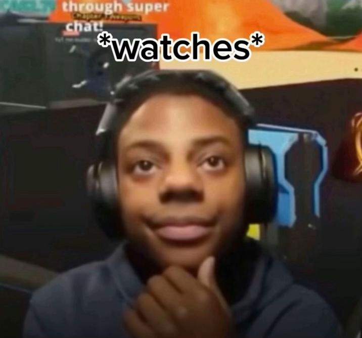
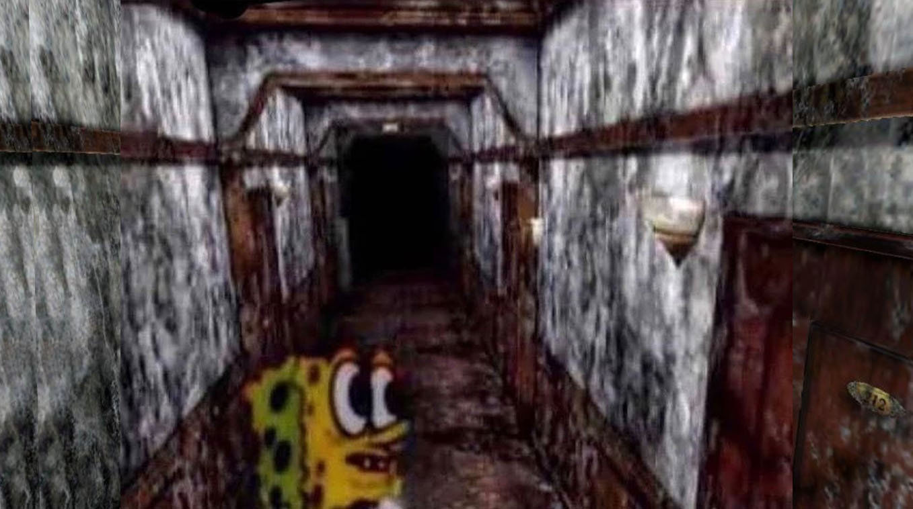

Speed is a very expressive guy and Freddy from Five Nights At Freddy is too memeable and a classic. I wanted to give it that internal vs. external feeling in scary situations and I came up with this. I heavily relied on Photoshop with color balance, lighting matching and cropping, quick masks, opacity layers, shading and filters. After exploring Photoshop for a bit, I realized it was just a more complicated version of a drawing program that I use for digital art (ibispaint x). I went from there and experimented.


